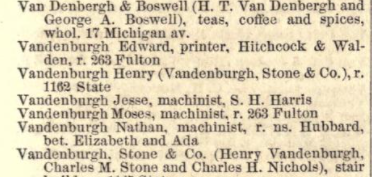

The Vandenburgh family immigrated from Holland in the mid 1600s and settled in the Albany, New York area. Edward's great-grandfather and great-uncles fought in the American Revolutionary War. There is ancedotal evidence that the Vandenburgh family helped build the Erie Canal.
Edward was born in 1845 in Waterford, New York. Waterford is at the confluence of the Mohawk and Hudson rivers and is the eastern gateway to the Erie Canal. I can imagine Edward and his older brothers, Nathaniel and Jesse, watching the boats and barges move into the canal on their trips to and from New York City and Buffalo. There is ancedotal evidence that Edward's family ran a ferry that crossed the Hudson.
By the time Edward was 17, he was living in Buffalo with his family and working as a compositor for the Buffalo Christian Advocats Office. Here is his letter of recommendation, now over 150 years old, made into a photograph, then posted on heavy cardboard:

"To whom it may concern, this may certify that Edward Vandeberg (sic) was appointed to me in A.D. 1862 as compositor in the Buffalo Christian Advocats Office, and continuted in my employ until I sold out in 1863. Since which he has remained in the same office until quite recently, filling the position of foreman most of his time. His conduct has been exemplary, and his application and attention to the duties in the office very satisfactory; and I take pleasure in stating that I regard him as a young man of good principles, strict integrity, and industrious habits, whose success in life I sincerely hope may by equal to deserts."
Buffalo September 21, 1864Levius S Church
Bethel Chaplain
By 1866, we find Edward in Chicago listed as a student at Bryant and Stratton's Business College (Clark and Washington) in the 1866 Chicago City Directory. This detail is interesting, considering there was a student in the same program in the same year by the name of George Burdick. George may have been the the half-brother of Ida Schreffler, whom would marry Edward in 1875.
The 1867 Chicago City Directory shows Edward living with his father (Moses) at 75 S. Green. (The SW corner of Green and Madison.) His brother is listed twice, once as Nathaniel and once and Nathan, at the same address 269 W Kinzie. (Kinzie and Carpenter.)

By 1867, Edward was shown to have a job at Hitchcock & Walden, a book publisher, as a printer. (That letter of recommendation must have came in handy.) He is still living with his father (Moses) at 263 Fulton. (Between Carpenter and Aberdeen.) Of note, brother Jesse makes an appearance in the Directory, and he is shown working for S.H. Harris, a manufacturer of safes and bank vault doors.
